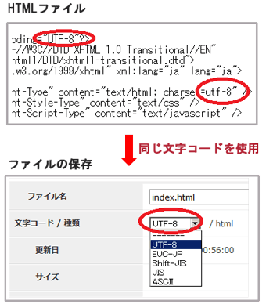
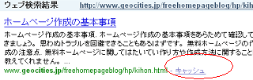
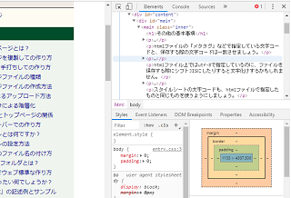
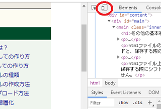

その他の基本事項
■ 文字コード
htmlファイルの「メタタグ」などで指定している文字コードと、保存する際の文字コードは一致させましょう。

htmlファイル上ではutf-8で指定しているのに、ファイルを保存する際にはシフトJISにしたりすると文字化けする可能性があります。スタイルシートの文字コードについてもutf-8で保存することをおすすめします。
また、HTMLタグを手打ちして作成する場合、ウィンドウズ付属のメモ帳では保存できる文字コードに限りがあるため、無料のテキストエディタなどを使いながら作成することをおすすめします。
■ ブラウザ
ブラウザによってホームページの表示のされ方に違いがあります。
例えば、自分が使用しているFirefoxではきちんと表示されていても、ユーザー数の多いIEで崩れていたら大部分の訪問者には崩れて表示されていることになります。ブラウザのシェアからいうと、ユーザー数が多いのはIEとFirefoxです。この両方のブラウザでどのように表示されているかは確認しておくことをおすすめします。
【追記：】
その後、GoogleのChromeやiPhone端末などで利用されているSafariの割合も多くなってきました。主要ブラウザのすべてで確認されることをおすすめします。
■ ウェブ上で編集する際の注意点
長時間かけてHTMLファイルを作成する際はこまめに保存しておきましょう。特に、ウェブ上で編集しながら作成する際、完成した直後に保存をしたくなるものですが、まずはメモ帳などに保存することをおすすめします。
数時間かけてHTMLを作成したとしても、保存ボタンを押した直後にエラー表示が出てしまい、それまでに作成したファイルが消えてしまうこともよくあります。もしくはレンタルサーバー側で自動的にログアウトしてしまい、再ログインした際にはすべて消えてしまうことも多いです。
できるだけ、最初からパソコン上のメモ帳などで作成し、出来上がったらウェブ上へコピペで貼り付けるようにした方がよいでしょう。
■ 間違って上書きしてしまった場合
こちらはすでにホームページを公開している場合になりますが、FTP接続の上書きなどで間違ってファイルを削除してしまった場合、検索エンジンのキャッシュに「コピー」が残っていないかをまずは確認しましょう。
グーグルかヤフーで「site:自分のサイトのurl」で検索すると調べることができます。
例えば、このページの場合のキャッシュはこのような形で残っているので、このソースの部分を表示して該当部分をコピペすれば、間違って削除してしまったファイルでも復活することができます。

もし削除からかなり時間が経過したあとに気づいた場合、検索エンジン側のキャッシュも消えてしまっているはずです。その場合はWayback Machineなどでもデータが残っているかを調べてみるとよいでしょう。
■ パソコン上で作成した場合のアップロード方法
ホームページを作成する際は、おおまかにわけて「ウェブ上で直接編集しながらホームページを作成する方法」と「パソコン上でサイトを完成させてからウェブ上に転送・アップロードする方法」の２種類があります。どちらで作成してもできばえは変わりません。
パソコン上でサイトを作成する場合、サーバーへの転送方法にもいろいろありますが、FFFTPなどのFTPソフトを利用すると便利です。
FTP接続によるアップロード方法
ファイルの転送をしなくてはならないケースがあれば、FTP接続を利用するとよいでしょう。
■ Chromeなどのデベロッパーツール
Chromeの「その他のツール - デベロッパーツール」やFirefoxの「ツール - ウェブ開発 - 開発ツールを表示」の箇所などで、そのページの要素を詳細に調べることができます。

また、以下の箇所にてスマホ閲覧時の表示をパソコン上で確認することもできます。

■ ブラウザのキャッシュ
CSSを変更してもホームページのデザインが変更されない場合、ブラウザにスタイルシートのキャッシュが残っている可能性があります。その場合、HTMLのHEAD内に指定するスタイルシートのURLに、日付などのクエリ「?」を追加しておくとよいでしょう。
例えば、「index.css」の内容を変更した場合、このファイル名はそのままの状態にて、HTML上でこのCSSを指定する際に「?20190101」などを追加しておくとすぐに反映されます。
例：）www.example.com/index.css?20190101
■ コメントアウト
HTMLファイルやスタイルシート上にちょっとした説明やメモを書いておきたい場合、コメント扱いにすれば、ホームページ上では表示されず、その箇所の文字列は無視されます。
HTMLファイル上に記入する際は次のように書きます。
<!-- コメント部分 -->
スタイルシート上でコメントする場合は次のように書きます。
/* コメント部分 */
■ キャプチャ画像の撮り方
ブラウザで閲覧している画面を画像で保存したい場合、キーボード右上の「Print Screen」のキーを押してキャプチャーし、ペイントなどのツールを開いて「貼り付け」をすれば、画像として保存することができます。
その画像をウェブ上に公開する場合には、適当な大きさに切り取るなり、文字を入れるなりして加工し拡張子を「.png」などにして公開するとよいでしょう。